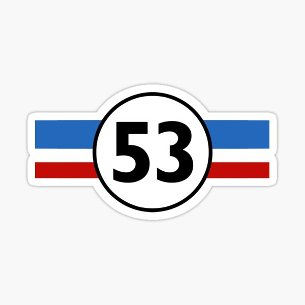

Herbie
Ano: 2007
O filme Herbie: Meu Fusca Turbinado (Herbie: Fully Loaded, 2005) conta a história de Maggie Peyton (Lindsay Lohan), uma jovem apaixonada por corridas que vem de uma tradicional família de pilotos da NASCAR.

O filme Herbie: Meu Fusca Turbinado (Herbie: Fully Loaded, 2005) conta a história de Maggie Peyton (Lindsay Lohan), uma jovem apaixonada por corridas que vem de uma tradicional família de pilotos da NASCAR.